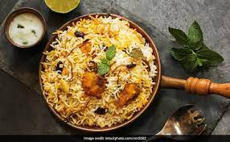
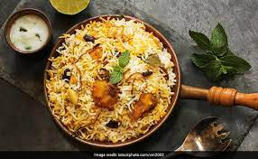

Food
Fruit and vegetables for good health
Food is any substance consumed to provide nutritional support for an organism. Food is usually of
plant, animal or fungal origin, and contains essential nutrients, such as carbohydrates, fats, proteins,
vitamins, or minerals. The substance is ingested by an organism and assimilated by the organism's cells
to provide energy, maintain life, or stimulate growth. Different species of animals have different feeding
behaviours that satisfy the needs of their unique metabolisms, often evolved to fill a specific ecological
within specific geographical contexts.Omnivorous humans are highly adaptable and have adapted to
obtain food in many different ecosystems. Historically, humans secured food through two main
methods: hunting and gathering and agriculture. As agricultural technologies increased, humans
settled into agriculture lifestyles with diets shaped by the agriculture opportunities in their
geography. Geographic and cultural differences has led to creation of numerous cuisines and
culinary arts, including a wide array of ingredients, herbs, spices, techniques, and dishes.
As cultures have mixed through forces like international
trade and globalization, ingredients have become more widely available beyond their geographic and cultural
origins, creating a cosmopolitan exchange of different food traditions and practices.
Today, the majority of the food energy required by the ever-increasing population of the world is supplied by
the industrial food industry, which produces food with intensive agriculture and distributes it through
complex food processing and food distribution systems. This system of conventional agriculture relies heavily
on fossil fuels, which means that the food and agricultural system is one of the major contributors to
climate change, accountable for as much as 37% of total greenhouse gas emissions.[2] Addressing the carbon
intensity of the food system and food waste are important mitigation measures in the global response to
climate change.
Fruits
 You will get the most health benefits and protection against disease if you eat a wide variety of
fruits and vegetables. The National Health and Medical Research Council (NHMRC) Australian dietary
guidelines recommend that adults eat at least five kinds of vegetable and two kinds of fruit every
day.
Foods of similar colours generally contain similar protective compounds. Try to eat a rainbow of
colourful fruits and vegetables every day to get the full range of health benefits. For example:
Red foods – like tomatoes and watermelon. These contain lycopene, which is thought to be important for fighting prostate cancer and heart disease
Green vegetables – like spinach and kale. These contain lutein and zeaxanthin, which may help protect against age-related eye disease
Blue and purple foods – like blueberries and eggplant. These contain anthocyanins, which may help protect the body from cancer
White foods – like cauliflower. These contain sulforaphane and may also help protect against some cancers.
You will get the most health benefits and protection against disease if you eat a wide variety of
fruits and vegetables. The National Health and Medical Research Council (NHMRC) Australian dietary
guidelines recommend that adults eat at least five kinds of vegetable and two kinds of fruit every
day.
Foods of similar colours generally contain similar protective compounds. Try to eat a rainbow of
colourful fruits and vegetables every day to get the full range of health benefits. For example:
Red foods – like tomatoes and watermelon. These contain lycopene, which is thought to be important for fighting prostate cancer and heart disease
Green vegetables – like spinach and kale. These contain lutein and zeaxanthin, which may help protect against age-related eye disease
Blue and purple foods – like blueberries and eggplant. These contain anthocyanins, which may help protect the body from cancer
White foods – like cauliflower. These contain sulforaphane and may also help protect against some cancers.
Nutrition
Vegetables and fruit are a handy snack food and are easily carried to work or school. Include them in everyone’s meals and snacks for a healthy, well-balanced diet. Some suggestions include:
Keep snack-size fruit and vegetable portions easily accessible in your fridge.
Keep fresh fruit on the bench or table.
Add fruit and vegetables to your favourite family recipes or as additions to your usual menus.
Use the colour and texture of a variety of fruit and vegetables to add interest to your meals.
Think up new ways to serve fruits and vegetables.
Some simple ways to serve fruits and vegetables include:
fruit and vegetable salads
vegetable or meat-and-vegetable stir-fries
raw fruit and vegetables
vegetable soups
snack pack, stewed or canned fruits or dried fruits.
Limit fruit juice, as it does not contain the same amount of nutrients as fresh fruit. It also contains a lot of sugars. These sugars are not necessarily good for your health, even though they are ‘natural’. Instead, have a drink of water and a serve of fruit.
Preparation and cooking of fruit and vegetables
Vegetables are often cooked, although some kinds are eaten raw. Cooking and processing can damage some nutrients and phytochemicals in plant foods.
Suggestions to get the best out of your fruit and vegetables include:
Eat raw vegetables and fruits if possible.
Try fruit or vegetables pureed into smoothies.
Use a sharp knife to cut fresh fruits to avoid bruising.
Cut off only the inedible parts of vegetables – sometimes the best nutrients are found in the skin, just below the skin or in the leaves.
Use stir-fry, grill, microwave, bake or steam methods with non-stick cookware and mono-unsaturated oils.
Do not overcook, to reduce nutrient loss.
Serve meals with vegetable pestos, salsas, chutneys and vinegars in place of sour cream, butter and creamy sauces.
Some nutrients such as carotenoids may actually be increased if food is cooked. For example, tomato has more
carotenoids, especially lycopene,
when it is cooked – a good reason to prepare fruits and vegetables in a variety of ways.
Once you’ve prepared and cooked your vegetables and fruit, spend some time on presentation. People are more
likely to enjoy a meal if it’s full of variety and visually appealing, as well as tasty. Sit at the table to
eat and enjoy your food without distractions like television.
Coronavirus COVID-19 Resource Center
Berries. High in fiber, berries are naturally sweet, and their rich colors mean they are high in
antioxidants and disease-fighting nutrients. ...
Fish,
Leafy greens,
Nuts,
Olive oil,
Whole grains,
Yogurt,
Cruciferous vegetables.
 
